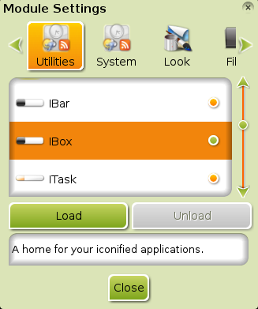

Bodhi - Guiden till Enlightenment
Moduler
Denna sida förklarar ingående vad Enlightenment (E17) Moduler är, hur de förhåller sig till Gadgets, hur man laddar Moduler från lagringsmedia och hur man hittar Moduler i Bodhi Linux repository (programförvaring).
Vad är en Modul?
En Modul är ett litet E17 program som kan användas för att utöka ditt skrivbords funktionalitet. De kan installeras på datorn och laddas till RAM vid uppstart. Genom att inte som grundbeteende ladda alla sina Moduler minimerar E17 mängden RAMminne som används vid varje given tidpunkt. Ju fler Moduler du laddar, desto mer RAM tas i anspråk. På datorer med 512 MB RAM eller mindre är detta en viktig detalj att beakta. På grund av Enlightenment Foundation Libraries (EFL), höga verkningsgrad åtgår det mycket lite ytterligare minne för varje Modul. Många Moduler, när de väl laddats till RAM, ger tillgång till Gadgets som kan placeras på skrivbordet eller i en Hylla.
Hur man laddar Moduler
Gå till Menu -> Settings -> Modules så öppnas Module Settings rutan:

Lägg märke till flikarna i överkant. Det finns Moduler för Utility, System, Look (verktyg, system, utseende) och så vidare. I bilden ovan visas Forecasts (väderprognos-Modulen) med en grön indikator (prick) till höger om den vilket indikerar att den redan är laddad (detta är indikatorn i standard-Profilen; i andra Profiler kan indikatorn se annorlunda ut). Det finns en kort beskrivning på vad Modulen gör, i rutan under load & unload knapparna. Du har valet att ladda ur den för att minska brukat minne eller rensa upp på skrivbordet. Två Moduler ner i listan, IBox, är inte laddad. Om du klickar på IBox raden, kommer Load (ladda) knappen att markeras och bli klickbar. Skrollisten till höger låter dig skrolla ner för listan för att se andra Moduler som är installerade och deras status, antingen laddad till RAM eller klar för att laddas.
Moduler och Gadgets
Många av Modulerna har så kallade "Gadgets" som kan läggas till på ditt skrivbord eller i en Hylla. Vissa, som t.ex. Forecasts, kan endast visas på skrivbordet, medan andra som Systray kan endast visas i en Hylla. Många Moduler finns endast till för att tillhandahålla en enda Gadget som t.ex. Clock. I vanliga fall räcker det inta med att bara ladda en Module eftersom E17 låter dig välja var en laddad Module's Gadgets skall visas. Vänligen kolla Gadgets och/eller Hyllor avsnittet för detaljer om placering av Gadgets.
Installerade Moduler
På Modul Förteckning sidan finner du en lista på alla Moduler som finns installerade från början.
Ladda ner Moduler
Många Moduler, så som Forecasts, finns inte med på Bodhi Linux installations CD, detta för att hålla datamängden innom lämpliga gränser, i enlighet med Bodhi Linux filosofi. Moduler som inte finns med som standard kan du finna på Bodhi Linux repository via Synaptic Package Manger i Main Menu -> Applications -> Preferences. De kan installeras som vilket annat Linux-program som helst. Förutom Forecasts, kolla gärna på följande användbara Enlightenment Moduler som inte finns installerade från början:
- cpu
- ecomorph
- forecasts
- mem
- news
- photo
Sök efter "enlightenment module" i Quick Search på Synaptic för att hitta fler.
För en komplett lista på tillgängliga Moduler se: Modul Förteckning.
Ta bort en Modul
På grund av Modulers beskaffenhet, är det inte absolut nödvändigt att radera/avinstallera dem. Så länge de inte är laddade kommer de inte att bruka systemresurser som RAM eller processor-kraft, utan kommer endast att ta lite plats på hårddisken.
Om du trots detta finner att du måste avlägsna en (eller fler) Moduler, avinstallera helt enkelt dem med Synaptic Package Manager precis som andra program eller använd terminalkommandot:
sudo apt-get remove [modul-namn]
| Föregående: | Innehåll: | Nästa: |
| Virtuella Skrivbord | Index | Modul Förteckning |